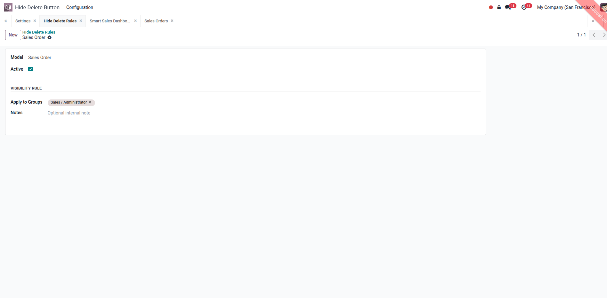

Screenshots
Hide Delete in Real Views
Configure the rule once, then check the form and list action menus.
Configure Model and Groups
Select the target model, activate the rule, and choose user groups that should no longer see the Delete action.

Delete Hidden on Form View
On the sales order form, the Actions menu still shows allowed actions while Delete is removed for the configured rule.

Delete Hidden on List View
After selecting records in the list view, the Actions dropdown no longer displays Delete for users affected by the rule.